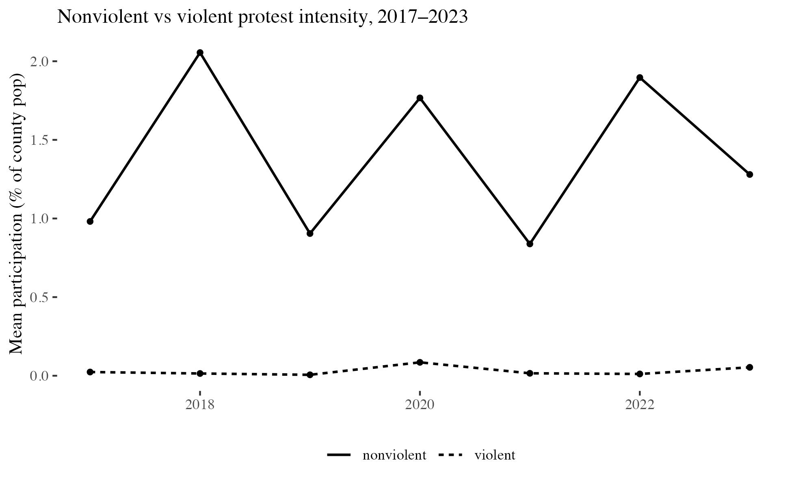
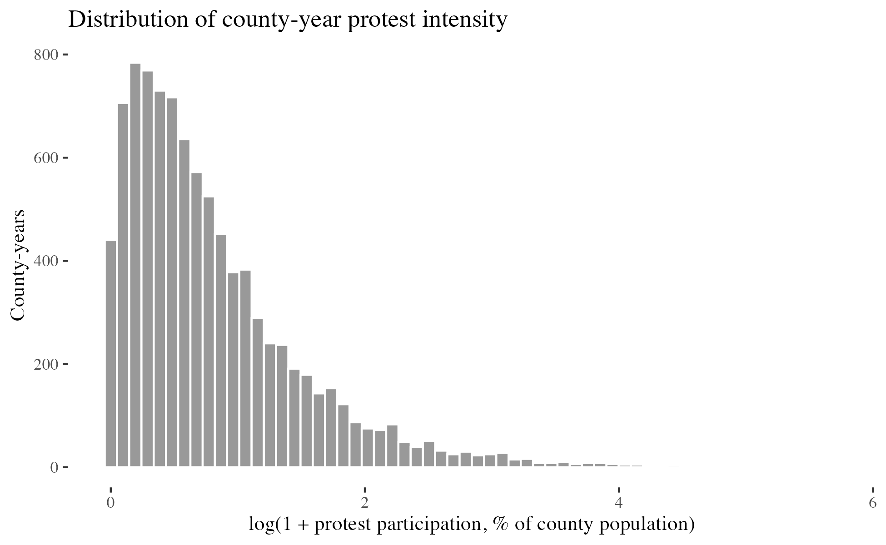
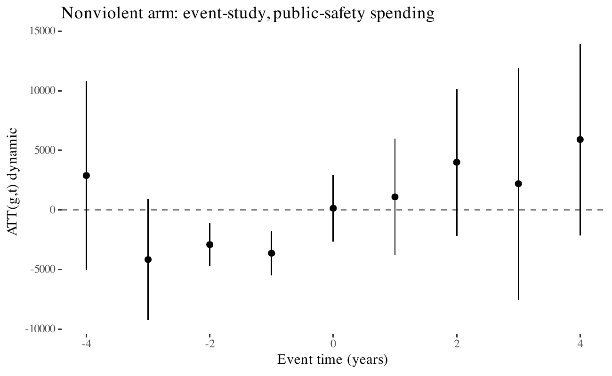
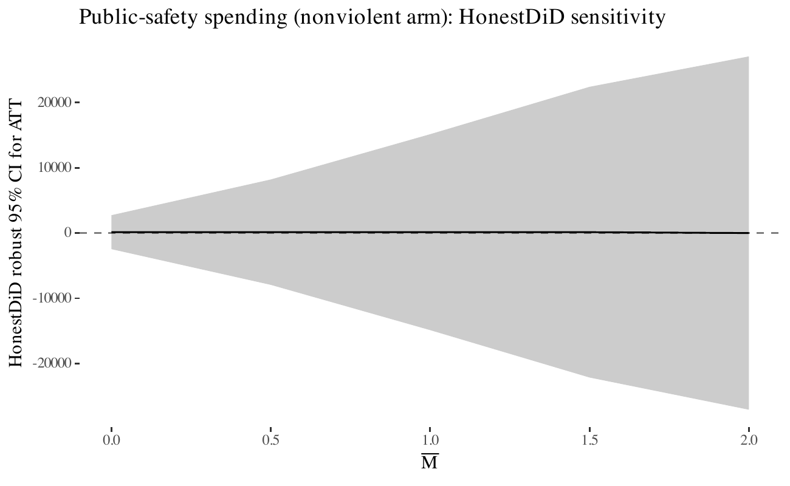
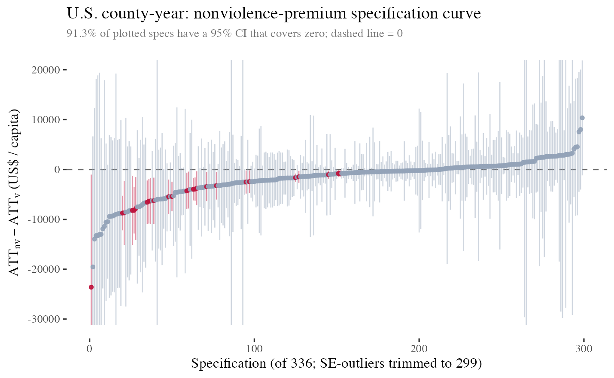
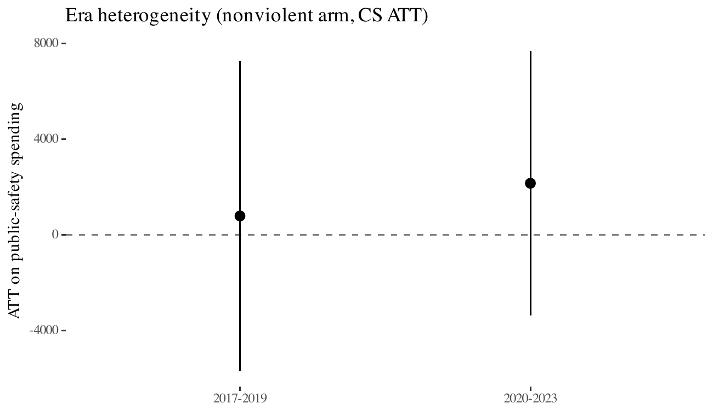

Movement Mechanics — Paper A_US
Nonviolent protest and local policy response in the United States, 2017–2023
Charles Crabtree & John B. Holbein
Monash University · Korea University · University of Virginia
slides_a_us.html
The Question
We look only at public-safety spending in Census-of-Governments county fiscal reports, and we condition on participation intensity. The question is whether the remaining variation in tactics — whether a protest stayed nonviolent or involved property damage, arrests, or injuries — does any additional work.
This is the cleanest question you can ask that directly stresses the post-Chenoweth–Stephan nonviolence premium claim at the scale where local governments actually move money.
Two Literatures Disagree
Chenoweth & Stephan (2011) famously argue that campaigns mobilising ≥3.5% of population almost always succeed when nonviolent — the 3.5% cliff. Wasow (2020), Gillion (2020), and McAdam's political-process tradition all read nonviolent discipline as the tactical variable that broadens winning coalitions.
Enos, Kaufman & Sands (2019) find that the 1992 LA riot moved local policy support in the opposite direction; Collins & Margo (2007) show persistent property-value losses in the neighbourhoods closest to 1960s urban unrest. Both traditions share a mechanism: violence raises salience in ways that provoke public-order spending and electoral retrenchment.
Both traditions are identified mostly from campaign-level or event-window comparisons. Neither has cleanly pinned down the within-locality, same-outcome contrast.
Three Competing Claims
The within-county effect of a nonviolent-dominated year on local public-safety spending is larger than the within-county effect of a violent-dominated year of comparable scale. This is the civil-resistance frame.
The arm contrast is zero. Tactical character adds no signal beyond scale. This is the honest null most coefficient-based tests default to when they don't condition on tactics.
The within-county effect of a violent-dominated year is larger than the within-county effect of a nonviolent-dominated year of comparable scale — the mechanism Enos et al. (2019) and Collins & Margo (2007) rely on.
Why We Need a New Design
Chenoweth and Stephan's evidence classifies whole campaigns as nonviolent or violent and compares success rates across them. That is a powerful descriptive claim, but it cannot separate the tactical-character effect from the selection effect: campaigns that go violent are systematically different in country, era, state capacity, and coalition composition from campaigns that stay nonviolent.
Our question is different. Holding a county (and the year) fixed, does a nonviolent-dominated protest year move local fiscal outcomes differently than a violent-dominated one? That is the within-unit arm contrast that a fixed-effects DiD design identifies cleanly — and that a between-campaign comparison cannot.
What Our Design Identifies
Unit = the campaign. Each campaign classified nonviolent or violent as a whole. Success rates compared across campaigns.
Unit = the county-year. A county enters the nonviolent arm the first year its nonviolent per-capita protest intensity crosses the 90th percentile of the pooled positive distribution; the violent arm symmetrically. Never-treated counties serve as controls. Unit and year fixed effects absorb stable differences and common shocks.
"Within-unit" = within-county over time. We do not follow individual campaigns as they shift tactics; that would require a different identification strategy entirely. We compare the post-treatment trajectory of a county whose nonviolent intensity crossed the threshold to the trajectory of counties that never crossed any threshold, and mirror that comparison for the violent arm.
Data
212KCCC protest events
10outcomes: 9 spending + 1 policing
Each county-year gets an event count, a total crowd-size estimate (imputed for ~60% of events that have no raw count), and three violence flags: any property damage, any arrests, any protester-instigated injury. Outcomes: nine spending categories from the Census of Governments (CoG) Annual Survey of State and Local Government Finances — public safety, police, corrections, fire, highways, health, welfare, parks-recreation, education — plus officer-involved killings from Mapping Police Violence (MPV). Spending outcomes are per-capita US dollars; MPV killings are per 100,000 residents.
Protest Intensity by Year

Y-axis is mean per-capita participation across counties, expressed as a percentage of county population. Nonviolent participation oscillates between 0.8% and 2.0% across 2017–2023; violent participation stays below 0.1% in every year. The violent column is rare enough that extracting a treatment signal from it is hard at any scale.
Distribution of Intensity

X-axis is the natural log of one plus per-capita participation (in % of population), a standard transformation that handles zeros. Most county-years sit near log(1+x) ≈ 0.5, equivalent to about 0.7% of population participating at least once. The 90th-percentile cutoff that defines our treatment lands near log(1+x) = 1.8 (about 5% of population participating).
Treatment Assignment
For each county, we compute per-capita nonviolent and violent protest intensity separately. A county enters the nonviolent arm in the first year its nonviolent per-capita intensity crosses the 90th percentile of the pooled positive distribution. Symmetrically for the violent arm. Counties that never cross either threshold are never-treated controls.
Identification anchor. The ATT answers the question: did counties that crossed this intensity threshold see a different public-safety-spending trajectory than counties that did not, once county and year fixed effects absorb stable differences and common shocks?
Why Callaway–Sant'Anna
A classical two-way-fixed-effects (TWFE) regression of spending on a binary treatment indicator implicitly uses already-treated counties as controls for later-treated counties. When treatment effects are heterogeneous across cohorts, that contamination can flip the sign of the average effect (Goodman-Bacon 2021; de Chaisemartin & D'Haultfœuille 2020).
Callaway & Sant'Anna (2021) estimate a separate ATT for every (g, t) group–year cell using only not-yet-treated controls, then aggregate with cohort-size weights. The output is robust to treatment-effect heterogeneity and interpretable as a simple ATT.
The Headline Estimand
Δ = ATT(nonviolent arm) − ATT(violent arm) on Census-of-Governments per-capita public-safety spending. The standard error uses an independent-arm approximation that adds the per-arm sampling variances; this is a lower bound on the true SE when the treated sets overlap (reported below).
Reporting the contrast — not the single-arm ATT — is the design choice that lets us speak directly to the Nonviolence Premium. A significant positive ATT on nonviolent protests alone would not falsify Intensity Equivalence; the contrast would.
Arm Diagnostic
455nv-arm counties · spread 2017–2023
100v-arm counties · 66 enter in 2020
The violent arm is identified almost entirely by a 2020 cohort of cities whose Census-of-Governments finance observations for FY2020–21 are contaminated by ARPA public-safety transfers unrelated to protest pressure. Every estimate that follows should be read through this lens.
Headline Estimate
| Quantity | Value |
|---|---|
| ATTnv (raw, per capita) | $2,210 |
| ATTv (raw, per capita) | $12,797 |
| Δ (contrast) | −$10,588 |
| SE (Δ, independent-arm lower bound) | $7,843 |
| p | 0.177 |
| Treated-set overlap | 59 of 100 |
The $12,797 violent-arm ATT is essentially an ARPA-era public-safety augmentation. The contrast is the wrong sign for a Nonviolence Premium reading, but the CI includes zero by a wide margin and the diagnostic above explains why the violent-arm number is an upper bound on what tactics could plausibly drive.
Nonviolent-Arm Event Study

Y-axis is the cohort-aggregated treatment effect at each event time; x-axis is years from treatment (event time = 0 is the year a county crosses the nonviolent-intensity threshold). Pre-treatment coefficients at event times −3, −2, −1 all dip slightly below zero, raising a parallel-trends concern; no single horizon is individually significant. This motivates the HonestDiD sensitivity check on the next slide.
Why HonestDiD
Rambachan & Roth (2023) turn the worst pre-period deviation into a scale parameter M-bar: how many times larger can a post-period violation of parallel trends be before the headline loses significance? A breakeven M-bar of 1 means the estimate survives a post-period deviation exactly as large as the worst pre-period violation. A breakeven of 0 means the estimate was already insignificant before you started worrying about parallel trends.
HonestDiD Sensitivity · Nonviolent Arm

Breakeven M-bar = 0.00. The raw nonviolent-arm ATT was already insignificant, so allowing any post-period deviation from parallel trends does no additional work. The same result for the arm contrast: breakeven 0.00.
Why a Specification Curve
Our design forces six binary-or-more choices: violence definition (strict / permissive / no-arrest), treatment cutoff (50th / 75th / 90th / 95th percentile), size variable (observed total / hi-bound), estimator (CS-DiD), outcome (7 CoG categories), and sample window (full / drop-2020). We run all 336 cells and plot the contrast with its 95% CI, sorted by the point estimate.
If the headline claim is robust, the curve should sit clearly on one side of zero. If design choices decide the sign, the curve will straddle zero — which is exactly what we find.
Specification Curve · 336 Cells

Each dot is one of 336 design choices; the vertical bar is its 95% CI. Red = 95% CI excludes zero on the backlash side; green = excludes zero on the premium side (none observed); grey = covers zero. The red cluster on the left tail is concentrated in the strict-violence-definition / drop-2020 cells, where the violent arm shrinks to too few treated counties for a stable estimate.
Placebo
Nonviolent-arm ATT = −$275 per capita (p ≈ 0.65). Null, as predicted.
Nonviolent-arm ATT = −$490 per capita (p ≈ 0.07). Borderline; not a clean null. We don't overclaim.
Two placebos partly vindicate the design and partly flag a 2020 fiscal-shock problem that no within-sample placebo can fully absorb.
Era Heterogeneity

2017–2019 (pre-Black-Lives-Matter resurgence) ATT on per-capita public-safety spending = $793 (SE $2,980); 2020–2023 ATT = $2,160 (SE $2,751). The point estimate is larger in the 2020–2023 split, consistent with the diagnostic that the 2020 cohort drives identification, but neither sub-sample crosses conventional significance.
Reading the Result
Caveat. The $12,797 violent-arm ATT is identified off a 66-county 2020 cohort whose CoG finance reports are contaminated by ARPA. The raw backlash-signed contrast should be read as an upper bound on what tactical character could move, not as substantive support for Violence Backlash.
The cross-national companion paper (A_MM) — where no single-year fiscal shock dominates — is the cleaner adjudicator. And it returns a clean null.
Bottom Line · Two-Paper Headline
The cross-national companion paper (A_MM) returns the same null on V-Dem polyarchy across four estimators at the country-year scale.
Thank You
Crabtree: Senior Lecturer, School of Social Sciences, Monash University · K-Club Professor, University College, Korea University
Holbein: Associate Professor, Frank Batten School of Leadership and Public Policy, University of Virginia